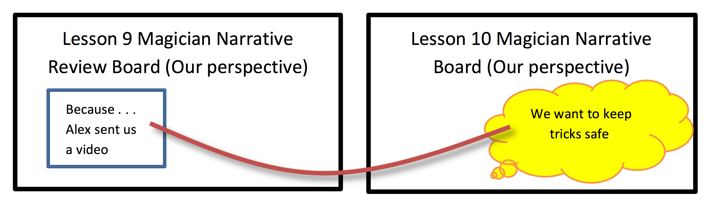

Objectives: Upon completion of the following lesson students will be able to:
Identify distal causes across multiple events (primary)
Identify goals, attempts/tries, and outcomes from two perspectives (primary)
Identify inferred goals/attempts for protagonist (review/reinforce)
Students explain/verbalize what events and causes are (review/reinforce)
Students explain/verbalize what goals, attempts outcomes are (review/reinforce)
Establish that goals are important to a story
Recall/retell text using graphic organizers (build working memory strategies) (secondary)
Create and orally retell a detailed story (model how to use a graphic organizer to tell/retell story
Materials Needed:
Base Appendix Folders (in Teacher Box):
Sample Procedure Cards (Causal Connections, Goals/Tries/Outcomes, Inference) (see Base Appendix, pp. 1-3)
Identifying Causes and Events Anchor Chart (Base Appendix, p. 4)
Student Goal/Try/Outcome Cards (on tablet or actual cards, see Base Appendix, p. 5)
Goal/Try/Outcome Anchor Chart (for reference only, Base Appendix, p. 6)
How to Place Cards on Goal/Causal Connections Organizer (Base Appendix, p. 7)
Blank Goal/Causal Organizer (Base Appendix, p. 8)
Outcome Prompt Flowchart (Base Appendix, p. 9)
Inference Anchor Chart (Base Appendix, p. 10)
Inference Prompts (Base Appendix, p. 11)
You Do It Together Conversation Starters and Prompts for Small Group Practice (Base Appendix, p. 12)
Small Group Practice Chart (Base Appendix, pp. 13-15)
Gestures Instruction Sheet (for reference only, Base Appendix, pp. 16-17)
Directed Movement Activities (Base Appendix, pp. 18-22) (laminated copies)
Green folder for teacher with Student Evaluation Script (Base Appendix, pp. 25-45)
Green folders with laminated student evaluation chart (6) (Base Appendix, p. 45)
Lesson 10 Appendix (To be printed):
Lesson 10 Intro: Candy Mastery Sheet (Lesson 10 Appendix, p. 1)
Lesson 10 Magician Narrative Review from Lesson 9 Mastery Sheet (Our perspective) (Lesson 10 Appendix, p. 2)
Lesson 10 Magician Narrative Review from Lesson 9 Mastery Sheet (Tatiana’s perspective) (Lesson 10 Appendix, p. 3)
Lesson 10 Magician Narrative Mastery Sheet (Our perspective) (Lesson 10 Appendix, p. 4)
Lesson 10 Magician Narrative Mastery Sheet (Tatiana’s perspective) (Lesson 10 Appendix, p. 5)
Piggie Pie Mastery Sheet (Gritch the Witch perspective) (Lesson 10 Appendix, p. 6)
Piggie Pie Mastery Sheet (Piggies’ perspective) (Lesson 10 Appendix, p. 7)
Student Evaluation Record Sheet (make 2 copies) (Lesson 10 Appendix, pp. 8-9)
Refrigerator Sheet to send home (make 6 color copies) (Lesson 10 Appendix, p. 10)
Technology:
Laptop
Teacher Tablets (2); Student tablet on Demo Mode (1)
Student Tablets (6)
Teacher Box:
Pens (3)
Plastic Cups (6)
Apron
Sharpie
Paperclips
Small Sticky Notes (assorted colors) (6 pads)
Chart Marker
Stickers
Chips for Green Folders (6)
Wet Erase Markers (3)
O-Rings
Wikki Stix
Velcro Boards (4)
Story Creation Bags (set of 12)
Example Bag (1 goal card, 1 try card, 1 outcome fail card, 1 outcome yes card, 1 because card, and 1 because string)
Role Cards (2 sets; I Do, I Help, I Watch, You Do Together, You Help, You Watch)
Role Charts (set of 2)
Procedure Cards (8 sets; 1 goal card, 1 try card, 1 outcome yes card, 1 outcome fail card, 1 procedure card)
Small Group Practice Flip Charts (2)
Videos/PowerPoints Needed:
Video: Lesson 9 Video from Alex the Magician (1 copy)
PowerPoint: Piggie Pie (1 copy)
Pre-Printed Cards (in Lesson 10 Box):
Lesson 9 Magician Narrative Review (from our perspective)
Lesson 10 Intro: Candy example
Lesson 10 Magician Narrative
Lesson 10 Piggy Pie [including character cards for Gritch (1) and Piggies (1)]
Boards from Previous Lesson(s):
Lesson 9 Magician Narrative Review (from our perspective) (build before the lesson begins)
Additional Materials and Props (in Lesson 10 Box):
6 remaining Magic Tricks in black velvet bag saved after Tatiana took 2 of the tricks (get from Lesson 9 Box)
Bag filled with empty candy wrappers
Props for Piggie Pie (Witch’s hat, 6 sets of pig ears, 2 white feather boas, 2 yellow feather boas, 2 cow aprons, 2 farmer’s hat)
Magician Materials (in Magician Box):
Magician Hat (Magician retrieves)
Cape (Magician retrieves)
Tatiana Wig (Tatiana retrieves)
Tatiana Glasses (Tatiana retrieves)
Tatiana Props (grocery bag, phone to take a picture of the magic tricks) (Tatiana retrieves)
Lesson 10
Setting Up for the Magician Narrative
Before the lesson begins:
Place the 6 magic tricks in the black velvet bag that were “saved” from Tatiana in Lesson 9 in your classroom. Place the tricks in your classroom in a place that will be visible to Tatiana so she can see them, but not right at the door where it would be easy for her to take them.
Overview of Magician Narrative Activity
Tatiana will be coming into your classroom today to try to “lure” you and the students out of the room, presumably so that she can take the remaining magic tricks.
Building Board from Previous Lesson:
Before the lesson begins:
Build the Lesson 9 Magician Narrative Review (from our perspective) Velcro board using the Lesson 9 Magician Narrative Review (from our perspective) pre-printed cards, which are in the Lesson 10 box.
Use the Lesson 10 Magician Narrative Review from Lesson 9 Mastery Sheet (Our perspective) (Lesson 10 Appendix, p. 2) as a guide when building the board.
Teacher/Co-teacher will need to use a wet erase marker to write in the TRIES from each teacher’s and child’s try from Lesson 9 on the blank TRY cards prior to starting the lesson.
Materials for Part 1: Introduction/Review
Goal, Try, and Outcome card (on tablet or actual cards, see Base Appendix, p. 5)
Procedure cards (1 for each child, 1 for each teacher)
Velcro board: Lesson 9 Magician Narrative Review (from our perspective) (build before the lesson begins)
1. Introduction/Review (10 minutes)
[Review rules chart by reading rules aloud to the students. Review behavior management system including consequences of not following rules (losing a sticky note and potentially not being able to get a toy at the end of the lesson if they don’t have all of the sticky notes with their name on it). Review how to earn stickers that go in plastic cups.]
Say: “Last time I asked you to look for goals, tries, and outcomes from TWO perspectives when you are reading, watching television, playing games, or in real life for your homework. Did you notice any goals, tries, and outcomes from TWO perspectives while you were at home since our last lesson?”
[Students respond]
[As students respond make sure that students identify the goals, tries, and outcomes in their own stories. As a follow-up ask them “Why did you have this goal?” “Why did you make that try?” and “Why did that outcome happen?” to establish causal connections]
Say: “I noticed goals, tries, and outcomes from TWO perspectives since our last session. My friend is a goalie on a soccer team, and she asked me to help her practice. We went to a soccer field, and I kicked balls at the goal, and she tried to block them. My goal was to get the ball in the goal, and her goal was to block the ball from going into the goal. My first try was to kick the ball up high, but she jumped up to block it. It was an outcome fail for me, since I didn’t get the ball in the goal, and outcome yes for her since she successfully blocked it. Next I tried kicking the ball to the very edge of goal, but she moved quickly and blocked my shot. Another outcome fail for me, and another outcome yes for her.”
[Explain to students that we will now begin with “I Do/You Help.”]
Say: “We are now going to begin with ‘I Do/You Help.’ [Place these roles onto the Roles Chart.] Sometimes when we are working together, once I think that you are getting the hang of it, I will give you a chance to help me out. We will call this time: ‘I Do/You Help’.” [Point to the “I Do/You Help” on the Roles Chart.]
Say: “When it is time for ‘I Do/You Help,’ I will still be teaching, but you will be able to participate by offering your ideas or helping me figure out the answers. You should still be listening with your ears [point to ears], watching with your eyes [point to eyes], and thinking with your brain [point to brain]. When you have something to add you can let me know by raising your hand [raise hand]. This will help you think and learn the information by participating more—it will also help me to know what you understand and what you still need help on.” [Use Gestures for Explaining Roles in Base Appendix, p. 16.]
Say: “Today, we will be continuing to practice finding goals, tries, and outcomes from TWO perspectives. We will also be adding a new part to what we know about making causal connections.”
[Use the script below to remind students about declarative, procedural, and conditional knowledge associated with events, causes, goals, tries, outcomes, displaying the Goal/Try/Outcome cards, and reviewing the Magician Narrative from Lesson 9.]
[This review should be QUICK and almost game-like. To make it quicker, you should commit the script to memory as much as you can and call on students rather than waiting for them to raise their hands.]
Say: “Let’s review what we have learned so far about EVENTS, CAUSES, GOALS, and TRIES. Remember, you can use the procedure card to help you remember.”
Review what events and causes are . . .
Ask: “What is an event?”
[Events are the things that happen in a story.]
Ask: “What question do we ask ourselves to help find the events in a story?”
[What happened?”] [make “what happened” gesture]
Ask: “Sometimes some events cause other events to happen. What is a cause?”
[A cause explains WHY something happened in a story.]
Ask: “What question do we ask ourselves to find the cause?”
[WHY did this happen?] [make “why” gesture]
Ask: “How do we show causal connections on our Velcro board?” [We show a causal connection using a Because String]
[Hold up procedure card.]
Say: “You can use these cards to help you remember what events and causes are. Remember, a few lessons ago we learned about a special kind of causal connection, a causal chain, where one event causes the next which causes the next and so on [point to events and Because Strings in the causal chain figure while reviewing].”
Review how to find the GOAL…
Ask: “What is a goal?”
[Something a character wants to do or get.]
Ask: “When do we find a goal in a story?”
[The beginning of the story.]
Ask: “When we find a goal, what card do we hold up?”
[Tap/hold up your goal card]
[If tablets are available follow the directions in this dark gray box]
[Activate question by tapping the fidelity box to the left.]
[Students should tap on the GOAL card and hold the tablet up]
[Before tapping the ‘Done’ button on the top right of the screen to move on, teachers should double-check to make sure that all students have responded to the question by looking at the list of student responses on the top left.]
[If tablets are NOT available: Have students hold up their goal card.]
Ask: “How do we record the goal on our Velcro board?”
[Record the goal on one of the yellow thought bubbles.]
[Display the sample thought bubble and the goal card].
Ask: “WHY do we need to find a goal in a story?” [make “why” gesture]
[Because a goal is the important part of a story. Knowing a goal in a story helps us to remember and understand the story better.]
Review how to find the initiating event using the Because Card.
Ask: “After we figure out the goal, what question do we ask ourselves?”
[Students respond: WHY does the character have this goal?]
[make “why” gesture]
Say: “This helps us think about what CAUSED the character to have that goal.”
Ask: “How do we record WHY the character had this goal on the Velcro board?”
[On a Because Card]
Ask: “After I write the CAUSE on the blue Because card I put it where?”
[Students respond: On the Velcro board next to the goal.]
Say: “This will remind us of what CAUSED the character to have the goal. We place this Because Card on the Velcro board [hold up the blue Because Card], and we put it right up here next to the goal.” [Place the blue Because Card to the LEFT of the thought bubble.]
Say: “Since this is a CAUSE, we can connect the blue Because card to what it CAUSED. So, we can use a Because String to connect the blue Because card to the goal.” [Point to the wikki stick connecting the Because card to the thought bubble.]
Next, review finding TRIES:
Ask: “Once we know what a character’s goal is, what do we look for next?”
[What a character did to try to get their goal.]
Ask: “What is a try?”
[Tries are actions/things a character does to try to get what they want/the goal.]
Ask: “When we see a try in the story, what card do we hold up?”
[Tap/hold up your try card]
[If tablets are available follow the directions in this dark gray box]
[Activate question by tapping the fidelity box to the left.]
[Students should tap on the TRY card and hold the tablet up]
[Before tapping the ‘Done’ button on the top right of the screen to move on, teachers should double-check to make sure that all students have responded to the question by looking at the list of student responses on the top left.]
[If tablets are NOT available: Have students hold up their try card.]
Ask: “How do I record the tries on the Velcro board?”
[Write the try on a try card.]
Ask: “What question do we need to ask ourselves after we find a try?”
[WHY did the character try that? / What caused the character to try that?] [make “why” gesture] [Point to the WHY question on the procedure card.]
Say: “When we think about WHY we TRIED something, it means there is a causal connection. [make “why” gesture] What do we use to connect what the character TRIED and WHY they tried it?” [A Because string]
Next, review finding OUTCOMES:
Ask: “After we find a try, what do we look for next?”
[What was the outcome of the try?]
Ask: “What is an outcome?”
[An outcome is the result of a try.]
Ask: “What is an outcome fail?”
[The character did not get their goal.]
Ask: “When we see an outcome fail, what card do we hold up?”
[Tap/hold up your outcome fail card.]
[If tablets are available follow the directions in this dark gray box]
[Activate question by tapping the fidelity box to the left.]
[Students should tap on the OUTCOME FAIL card and hold the tablet up]
[Before tapping the ‘Done’ button on the top right of the screen to move on, teachers should double-check to make sure that all students have responded to the question by looking at the list of student responses on the top left.]
[If tablets are NOT available: Have students hold up their outcome fail card.]
Ask: “How do I record an outcome fail on the Velcro board?”
[Write what happened on an outcome fail card.]
Ask: “What is an outcome yes?”
[The character did get their goal.]
Ask: “When we see an outcome yes, what card do we hold up?”
[Tap/hold up your outcome yes card.]
[If tablets are available follow the directions in this dark gray box]
[Activate question by tapping the fidelity box to the left.]
[Students should tap on the OUTCOME YES card and hold the tablet up]
[Before tapping the ‘Done’ button on the top right of the screen to move on, teachers should double-check to make sure that all students have responded to the question by looking at the list of student responses on the top left.]
[If tablets are NOT available: Have students hold up their outcome yes card.]
Ask: “How do I record an outcome yes on the Velcro board?”
[Write what happened on an outcome yes card.]
Ask: “What question do we need to ask ourselves after we find an outcome?” [Why did this outcome happen?] [make “why” gesture] [Point to the WHY question on the procedure card.]
Ask: “When we think about WHY we had an OUTCOME, we are looking for a causal connection. What do we use to connect what the character’s OUTCOME was and WHY they had this OUTCOME?” [A Because string]
Ask: “Once we have found a try and outcome, what question do we ask next?”
[Is the character’s goal still the same?]
Say: “Remember in our previous lessons we also learned how to be DETECTIVES. Sometimes when we are reading a book or watching a video, the author doesn’t always tell us everything. Then we have to be detectives and look for CLUES to help us figure things out.”
Inference Gestures
As the teacher is explaining the steps to making inferences, teachers and students should use the corresponding gestures outlined on the procedure card in the Gestures for Making Inferences Instructions (see Base Appendix, p. 17).
Say: “When we are being detectives there are several steps we have to remember. We need to:”
Say: “First, we ask, ‘What happened?’” [make “what happened” gesture]
Say: “Then, like a DETECTIVE, we look for ‘clues’ [make spyglass gesture] in the words or in the pictures to help us figure out what happened.”
Say: “Once we identify the clues, then we think [point to brain] about how the clues might relate to one another. This means we have to use our own experiences and what we know to help us think about how the clues might be connected.”
Say: “Then we make a connection [make interlaced finger gesture] to connect the different clues together.”
[Refer students to procedure cards.]
Say: “These cards will help us to remember how to find the goals, tries, and outcomes in a story, how to find simple causes and causal chains, and how to make inferences. If you need a reminder at any time, or forget a step, you can look at the card and see the steps.”
[Review the steps with the students using procedure card.]
Magician Narrative Review:
[Point to the Lesson 9 Magician Narrative Review board as you engage in the review]
Say: “Remember, last time Alex the Magician sent us a video message and asked us to get her magic tricks? We had to look out for her rival magician, Tatiana! What was our goal?”
[Student response: To get the magic tricks and keep them safe from Tatiana.]
Say: “WHY did we have this goal?” [make “why” gesture]
[Student response: Because Alex the Magician sent us a video message warning us that Tatiana will try to take the tricks.]
Say: “Remember, we are learning about TWO perspectives. Just like we had a goal in our Magician Narrative, Tatiana had a goal, too. She wanted to try to take the magic tricks. WHY did she have this goal? [make “why” gesture]
[Student response: Because she wants to be a better magician than Alex the Magician.]
Say: “We all had different tries that we did to keep our magic tricks safe from Tatiana. I tried to put it in (insert where the lead teacher hid the trick), and the Ms./Mr. Co-teacher hid it in (insert where the co-teacher hid her trick). What tries did you do to keep the magic tricks safe?”
[Student responses vary.]
Say: “WHY did we try all these things?” [make “why” gesture]
[Student response: Because our goal was to get the magic tricks and keep them safe from Tatiana.]
Say: “Remember, Tatiana had a goal, too. She tried lots of different things to take the magic tricks from us. WHY did she try these things?” [make “why” gesture]
[Student response: Because her goal was to take the magic tricks from us.]
Say: “A lot of our tries were successful. We found the tricks and got many of the tricks safely to the room. We had lots of Outcome Yes outcomes. WHY did we have so many Outcome Yeses?” [make “why” gesture]
[Student response: Because our goal was to keep the magic tricks safe from Tatiana and we did. We got our goal.]
Say: “Just like we had a lot of Outcome Yeses, Tatiana had mostly Outcome Fails. Why did she have Outcome Fails?”
[Student response: Because her goal was to take our magic tricks and she didn’t.]
Materials for Part 2: Teacher Modeling/Guided Practice with Magician Narrative
Goal, Try, and Outcome card (on tablet or actual cards, see Base Appendix, p. 5)
Procedure cards (1 for each child, 1 for each teacher)
Lesson 9 Magician Narrative Review (from our perspective) (build before the lesson begins)
Lesson 10 Intro: Candy Mastery Sheet (Lesson 10 Appendix, p. 1)
Lesson 10 Magician Narrative Review from Lesson 9 Mastery Sheet (Our perspective) (Lesson 10 Appendix, p. 2)
Lesson 10 Magician Narrative Review from Lesson 9 Mastery Sheet (Tatiana’s perspective) (Lesson 10 Appendix, p. 3)
Lesson 10 Magician Narrative Mastery Sheet (Our perspective) (Lesson 10 Appendix, p. 4)
Lesson 10 Magician Narrative Mastery Sheet (Tatiana’s perspective) (Lesson 10 Appendix, p. 5)
Bag with empty candy wrappers
Pre-printed cards: Lesson 10 Intro: Candy
Pre-printed cards: Lesson 10 Magician Narrative
3 Velcro boards
Wikki stix
Wet erase marker
Video: Lesson 9 video message from Alex the Magician (1 copy)
Tatiana costume (magician’s hat, wig, glasses) and props (grocery bag, phone to take a picture of the magic tricks)
6 magic tricks in black velvet bag that were saved from Tatiana (in Lesson 9 Box)
2. Teacher Modeling/Guided Practice with Magician Narrative from Two Perspectives (30 min.)
Overview of the Magician Narrative Activity (This is just an overview. The script follows.)
Before the lesson begins:
Place the 6 magic tricks in the black velvet bag (located in the Lesson 9 Box) that were “saved” from Tatiana in Lesson 9 in your classroom. Place the tricks in your classroom in a place that will be visible to Tatiana so she can see them, but not right at the door where it would be easy for her to take them.
Overview of Magician Narrative Activity
Tatiana will be coming into your classroom 3 times today. Once just to see if you have the magic tricks, and two more times to try to “lure” you and the students out of the room, presumably so that she can take the remaining magic tricks.
Students will need to infer Tatiana’s goal and tries using clues from her statements and actions.
Tatiana’s goal is to get the remaining magic tricks. She will make 2 tries:
TRY #1: Attempts to lure you out into the hallway to see a “puppy.”
TRY #2: Attempts to lure you to the office saying you are needed.
Tatiana will not get the tricks, but students often think she will return. You may need to create a fictional story after the activity to make sure the students know that she will not return (Ex. you saw her driving away in her car, the principal has called the police to make sure she doesn’t come back, she sent you a text message saying she gives up and will not try to get the tricks again).
Students are usually very excited during this activity. Some are rather worried/anxious by Tatiana’s return and others are a little aggressive about defending the magic tricks. Use the behavior management system as needed to assist.
Charting Instructions for Magician’s Narrative
You will be charting the goals, tries, outcomes, and causal connections from both perspectives as the events unfold. You will finish charting each try and outcome prior to Tatiana making her next try.
Lesson 9 Magician Narrative Review Board
The board with the students’ perspective from last lesson (i.e., Goal: trying to get the magic tricks past Tatiana and keep them safe) should be on hand for the Magician Narrative, as you will be connecting today’s goal (keeping our tricks safe from Tatiana) to an event from last lesson (Alex sending us a video message) to illustrate the DISTAL cause.
Teachers will need to write in the TRIES from each teacher’s and child’s TRY from Lesson 9 on the blank TRY cards prior to starting the lesson.
Say: “In order to help us understand goals, tries, and outcomes from two perspectives, we are going to continue our Magician Narrative.”
[Explain to students that we will now be continue with “I Do/You Help.”]
Say: “We are now going to continue with ‘I Do/You Help.’ [Place these roles onto the Roles Chart.] That means I’ll be doing some of the talking and explaining, and you all will be helping me out. You will be listening with your ears [point to ears], watching with your eyes [point to eyes], thinking with your brain [point to brain], and raising with your hand [raise your hand].” [Use Gestures for Explaining Roles]
Say: “We will continue to learn how to identify goals, tries, and outcomes from TWO perspectives, but today we will also have to be DETECTIVES and study the CLUES to figure out each character’s goals, tries, and outcomes. As well, we will learn about a new causal pattern called ‘distal causes.’”
Say: “Today we will be learning how to recognize things that happen earlier in a story that cause things to happen much later. For example, this morning I ate a bunch of candy.”
[Show children bag full of empty candy wrappers.]
Say: “Then, I took my dog for a walk, went to the library, and went grocery shopping. Uggh! Now I am feeling really sick! What caused me to feel really sick was the fact that I ate a ton of candy in the morning.”
Say: “In these cases, the character (I am the character in this story) did something (I ate a lot of candy) and then, much later, we learn ‘what happened?’ [make “what happened” gesture] because of it (I feel sick).”
[Refer students to procedure cards.]
Say: “We have learned about simple causes [point to simple cause on card] and causal chains [point to causal chains on card]. Today we are learning about our last causal connection. It is called a distal cause [point to distal cause on the card]. A distal cause is an event that happens in a story that causes something else to happen much later. There are several events (and time) in between the cause and what happens later.”
Say: “These cards will help us to remember how to find these types of causal connections. If you need a reminder at any time, you can look at the card and see the different kinds of causal connections.”
Say: “When there is a distal cause we can’t tell immediately ‘What Happened?’ [make “what happened” gesture]. We have to read on (or continue viewing) to see ‘What Happened?’”
Say: “The differences between a distal cause and simple causes and causal chains is that with a distal cause it takes a LONG time before you know what happened. There is a cause and it is a long time before you figure out what happened as a result of that cause. There are many events that happen in between.”
Say: “Let’s identify the events in the example that I just told you about. I will use these plain event cards [hold up one of the pre-printed cards from the Lesson 10 Intro: Candy bag] to retell my story.”
[Place each card from Lesson 10 Intro: Candy bag down on the table so that it faces the students. As you place each card down retell your story. Use the Lesson 10 Intro: Candy Mastery Sheet to guide you as you place the cards down.]
Say: “This morning I ate a bunch of candy [put Event 1 card down].”
Say: “Then, I took my dog for a walk [put Event 2 card down].”
Say: “Then I went to the library [put Event 3 card down].”
Say: “Then I went grocery shopping [put Event 4 card down].”
Say: “Now I am feeling really sick [put Event 5 card down].”
Say: “So, to figure out the distal cause, first I have to think ‘what happened’ [make ‘what happened’ gesture]? What happened to me in my story?”
[Student response: You are feeling really sick.]
Say: “Right, I am feeling really sick [point to the Event 5 card]. That is what happened.”
Say: “Now I have to figure out WHY [make ‘why’ gesture] that happened. Why am I feeling really sick right now?”
[Student response: You ate a bunch of candy this morning.]
Say: “Yes, I ate a bunch of candy this morning WHICH CAUSED [make finger move] me to feel really sick now.”
Say: “In a distal cause we connect ‘what happened’ [make ‘what happened’ gesture] to WHY [make ‘why’ gesture] it happened using an extra-long Because string [display extra-long Because string].
[Use a long Because string to CONNECT the DISTAL cause (eating lots of candy) to the OUTCOME (feeling sick). You will need to connect two or more wikki stix together to make a longer Because string.]
Say: “I can say the connection the other way too. I feel really sick now BECAUSE [make finger move] I ate a bunch of candy earlier.”
Say: “This is a distal cause because there are many events in between the cause [point to Event 1 ‘eating a bunch of candy’ card] and ‘what happened’ [point to Event 5 ‘feeling sick’ card].”
Say: “Notice that there are three events in between eating the candy and feeling sick. A lot of time has passed since I ate that candy this morning. So, that is a distal cause. It happened far off in the distance—a long time ago. The ‘d-i-s-t’ in ‘distal’ is like the ‘d-i-s-t’ in ‘distance.’ It means ‘far away.’ So, a distal cause means there is a lot of distance, or many events, in between the cause and ‘what happened.’ We will use the extra-long Because string to make distal cause connections.”
Say: “Today we will be looking for distal causes in our stories. We will also be thinking about TWO perspectives in stories. Remember, when a story has more than one character, each character has what’s called a point of view or perspective. This means that each character may see the same events differently or that they may have different goals.”
Say: “Today we are going to practice identifying the goals, tries, and outcomes from TWO perspectives in a story, and we will have to be DETECTIVES to find CLUES [make spyglass gesture] to figure out the goals, tries, and outcomes from each character’s perspective. So, we will be integrating everything we have learned so far together. Remember as we work on our magician story today to hold up your goal, try, and outcome cards if you see one.”
[If tablets are available follow the directions in this dark gray box]
[The rest of this activity is a free response period. Students can freely respond when they identify a GOAL, TRY, or OUTCOME in the story by tapping the GOAL, TRY, OUTCOME FAIL, or OUTCOME YES cards and holding up their tablet. Teachers can monitor responses by looking at student tablets when they are held up. You should not tap the Done button until the end of this activity.]
[If tablets are NOT available follow directions in this light gray box]
[Students will hold up their GOAL, TRY, OUTCOME FAIL, or OUTCOME YES cards when they feel it is appropriate throughout this activity.]
[You are stalling for time from this point on. You are waiting for Tatiana to come into your room. Drag the retelling below out if you need to.]
Say: “So, in our magician story when we left off [refer to the Lesson 9 Magician Review Velcro board], Tatiana had tried to take our magic tricks when we were bringing them back to the classroom. We had the goal to get the magic tricks past Tatiana and keep them safe, and Tatiana’s goal was to take the magic tricks from us.” [You can add in details telling the children that the tricks are safe now, reliving the excitement from the previous lesson, etc. to stall if needed.]
Instructions for Tatiana
Tatiana will enter the classroom 4 times today.
First, she will sneakily walk into the classroom just to see if the tricks are in the room. She is looking for the remaining magic tricks (but is being sneaky about it). She should have Kroger bags (or something similar) hanging out of a pocket. She should be rubbing her hands together deviously. When she sees the tricks she should pretend to count them and take a picture of them with her phone. When she speaks her voice is kind of casual, as if she is trying to make friends with the teacher and students. Tatiana will leave until after the group charts goals from two perspectives and rewatches the video message from Alex the Magician.
Tatiana will enter the classroom the second time to make her first TRY (attempting to lure everyone to the hallway to see a “puppy”).
She will come back into the classroom a third time while the teacher and some students look for the “puppy.” After the teacher and students go back into the classroom, Tatiana will remain in the hall outside the classroom as the group returns to the classroom to chart her goal, try, and outcome.
Tatiana will enter the classroom the fourth time to make her second TRY (attempt to lure everyone to go to the office). After her second TRY, Tatiana will leave the building. The group will chart the second try and outcome.
[While you are reviewing, Tatiana comes into the room. She sneaks around looking for the tricks. Once she sees the magic tricks she suspiciously counts them and takes a picture of them.]
Tatiana says: “Your magic tricks look really cool. Are you going to be leaving the room anytime soon? Maybe for a break or something?”
Teacher says: “No.”
[Tatiana shrugs and leaves. She will remain in the hallway until after you have charted her goal and made the causal connection.]
Say: “That was weird. Tatiana was acting weird while she was in here. Why would she want to know when we are leaving the room? Let’s be DETECTIVES and think about clues [make spyglass gesture] that we saw in her actions and words that help us figure out what her goal was.”
[Students should: Share what they think Tatiana’s goal is (Goal: Tatiana wants to take our magic tricks)]
Ask: “Can someone place Tatiana’s goal on the Velcro board?”
[Student should: Place the yellow goal thought bubble at the top of one Velcro board.]
Ask: “Great ideas. What makes you think this is her goal? What CLUES [make spyglass gesture] did you see or hear that helped you figure out Tatiana’s goal?”
[Students should: Share clues from Tatiana’s actions or words and link them to their background knowledge to make inferences about how they figured out her goal.]
[Student response: Identifying possible clues and linking to prior knowledge]
(Actions)
She looked suspicious.
She had a Kroger bag in her pocket.
She counted the magic tricks.
She took a picture of the magic tricks.
(Words)
She said our tricks were cool.
She asked if we were going to be leaving soon or taking a break soon.
(Links to Prior Knowledge):
We know that she tried to take the tricks last time.
Ask: “WHY do you think she has this goal?” [make “why” gesture]
[Student response: Because she wants to be a better magician than Alex the Magician].
Ask: “Can someone place the blue BECAUSE card on the Velcro board and make and retell the connection?”
[Student should: Place the blue BECAUSE card to the left of the GOAL.]
[Student should also: Connect the blue BECAUSE card to the GOAL and say, “Tatiana wants to take the magic tricks BECAUSE (make finger move) she wants to be a better magician than Alex.” OR “Tatiana wants to be a better magician than Alex, WHICH CAUSED her to want to take the magic tricks.”
Say: “Good job of making that connection. So, we used the CLUES we saw to figure out that Tatiana’s goal is definitely to take the magic tricks. If that is her goal, what will our goal be?”
[Student response: We want to keep the magic tricks safe from Tatiana].
Ask: “Can someone place out goal on the other Velcro board?”
[Student should: Place the yellow goal thought bubble at the top of the second Velcro board.]
Ask: “WHY do we have this goal? [make “why” gesture]
[Student response: Because Alex the Magician sent a video message in the last lesson warning us that Tatiana would try to take the magic tricks.]
Say: “This is an example of a DISTAL cause. Remember that during our last lesson we got a video message from Alex the Magician asking us to keep her magic tricks safe from Tatiana? This happened a few days ago and lots of events happened in between then and now. So, getting that video message all those days ago is causing our goal today. So, this is an example of a distal cause.”
[Pull out the Lesson 9 Magician Narrative Review Velcro board that is already built. You will need it to CONNECT the group’s GOAL on today’s Lesson 10 Magician Narrative board (our perspective) to the Because Card on the Lesson 9 Magician Narrative Review board (our perspective)]
[Demonstrate how to make the distal causal connection between the current goal on the Lesson 10 Magician Narrative board (keeping the magic tricks safe from Tatiana) and the distal cause on the Lesson 9 Magician Narrative Review board (Alex sending us a video message) using a Because String. The Because string should be long and should connect the current goal all the way back to the previous because card from the Lesson 9 board.]
Say: “Today our goal is to keep the magic tricks safe from Tatiana because (make finger move) way back in our last lesson Alex the Magician sent us a video message warning us that Tatiana would try to take the magic tricks.’ Or we could say, ‘Alex the Magician sent us a video message warning us that Tatiana would try to take the magic tricks, WHICH CAUSED (make finger move) us to want to keep the magic tricks safe from her.’”
Say: “Since the distal cause was a few days ago, let’s re-watch the video message again to refresh our memories.”
[Re-watch that section of the video message from the previous lesson to remind students of this point.]
Say: “Yes, she clearly told us we should keep the tricks safe in that video. That happened a few days ago. So, can you see how that video, which came to us a few days ago, is now the CAUSE of our goal today? That’s why it is called a DISTAL cause. The cause happened a long time ago.”
[After we have re-watched the video, Tatiana comes back to the door. She is like a completely different person. She is not sneaky or suspicious. She is excited and effervescent.]
Tatiana says: “Hey guys! I have a puppy out here in the hallway! She is so cute! Come see her!” [TATIANA: TRY 1]
Say: “Oh my goodness I love puppies! I want to go see it. Who wants to come with me?”
Co-teacher says: “Oh, I don’t know. . . Tatiana’s pretty sneaky. I think someone should stay here and guard the tricks. I’ll do that.”
[Some of the children will be skeptical of Tatiana’s “puppy.” Guide them to the notion that they can stay behind and guard the tricks. Let those who want to stay in the room and guard the tricks stay with the Co-teacher. The rest of the students should go in the hallway with you.]
[You take the kids out into the hallway. Go far enough down the hall to look for the puppy so that Tatiana can get into the classroom.]
Tatiana says: “The puppy is way down there [points down the hall].”
[Tatiana tries to sneak in the room to get the tricks. She sees the co-teacher in the classroom (Our Perspective: TRY 1) and runs back out.]
[You come back in the classroom with the students.]
Co-teacher says: “While you were looking for the puppy Tatiana was in here and she tried to get the magic tricks. We were guarding them. So, she didn’t get them. Then she left.”
[The students will be very excited at this point.]
[TATIANA: Did not get the tricks. OUTCOME FAIL, YOU: Kept the tricks safe. OUTCOME YES]
Charting Instructions
We will be charting the goals, tries, outcomes, and causal connections from both perspectives as we go. We will finish charting each try and outcome prior to Tatiana making her next try.
Say: “Well there wasn’t a puppy in the hallway. So, she must have been trying to get us out of the room so she could take the tricks. It’s a good thing you stayed behind to guard them. Okay, let’s figure out what just happened and chart things from Tatiana’s perspective and our perspective.”
Ask: “Let’s start by checking Tatiana’s goal. We thought that she wanted to take the magic tricks. Did that turn out to be her goal?”
[Student response: yes]
Ask: “What is our goal?”
[Student response: We want to keep the magic tricks safe.]
Ask: “What did Tatiana TRY to get her goal?”
[Student response: She told us there was a puppy in the hallway and tried to sneak in the classroom.]
Say: “Can someone place Tatiana’s TRY on the Velcro board?”
[Students should: Place Tatiana’s TRY #1 under the GOAL.]
Ask: “After a TRY, we ask WHY. WHY [make “why” gesture] did Tatiana TRY this?”
[Student response: Because (make finger move) she wants to take the tricks.]
Ask: “Can someone make and retell the connection using a Because string?”
[Student should: Connect Tatiana’s TRY 1 to the GOAL with Because String and say, “Tatiana told us there was a puppy in the hallway and tried to sneak in the classroom BECAUSE (make finger move) she wants to take the magic tricks.” OR “Tatiana wants to take the magic tricks, WHICH CAUSED her to tell us there was a puppy in the hallway and tried to sneak in the classroom.”]
Ask: “Okay, now let’s think about our perspective. Our goal was to keep the tricks safe from Tatiana. What did we TRY to get our goal?”
[Student response: The co-teacher stayed in the classroom to guard the tricks.]
Say: “Can someone place our TRY on the Velcro board?”
[Students should: Place our TRY #1 under the GOAL.]
Ask: “After a TRY, we ask WHY. WHY [make “why” gesture] did we TRY this?”
[Student response: Because (make finger move) we want to keep the tricks safe from Tatiana.]
Ask: “Can someone make and retell the connection using a Because string?”
[Student should: Connect our TRY 1 to the GOAL with Because String and say, “Ms./Mr. Co-teacher stayed in the room to guard the tricks BECAUSE (make finger move) we want to keep the tricks safe from Tatiana.” OR “We want to keep the tricks safe from Tatiana, WHICH CAUSED Ms./Mr. Co-teacher to stay in the room to guard the tricks.”]
Ask: “Okay, now let’s think about ‘what happened’ [make ‘what happened gesture] as a result of these TRIES. What happened as a result of Tatiana’s TRY? What was her OUTCOME?”
[Student response: Tatiana didn’t get the tricks.]
Say: “So, what was Tatiana’s OUTCOME for this try?”
[Student response: It was an outcome fail.]
Ask: “Can someone chart Tatiana’s outcome on the Velcro board?”
[Student should: Place the OUTCOME FAIL card to the right of the Try #1 card.]
Ask: “WHY did this outcome happen?” [make “why” gesture]
[Student response: Because (make finger move) she said there was a puppy outside.]
Say: “Can someone use a Because string to show this connection and retell that connection?”
[Student should: Connect TRY #1 to the OUTCOME FAIL using Because string and say, “Tatiana did not get the tricks BECAUSE (make finger move) she told us there was a puppy outside. OR “Tatiana told us there was a puppy in the outside and snuck into the classroom, WHICH CAUSED (make finger move) her not to get the tricks.”]
Ask: “Okay, now let’s think about ‘what happened’ [make ‘what happened gesture] as a result of our TRY. What happened as a result of our TRY? What was our OUTCOME?”
[Student response: We kept the tricks safe from Tatiana.]
Ask: “So what was the OUTCOME of our try?”
[Student response: It was an OUTCOME YES.]
Ask: “Can someone chart our outcome on the Velcro board?”
[Student should: Place the OUTCOME YES card to the right of the Try #1 card.]
Ask: “WHY did this outcome happen?” [make “why” gesture]
[Student response: Because (make finger move) Ms./Mr. Co-teacher stayed in the room to guard the tricks.]
Say: “Can someone use a Because string to show this connection and retell that connection?”
[Student should: Connect TRY #1 to the OUTCOME YES using Because string and say, “We kept the tricks safe BECAUSE Ms./Mr. Co-teacher stayed in the room and guarded the tricks. OR “Ms./Mr. Co-teacher stayed in the room and guarded the tricks, WHICH CAUSED (make finger move) us to keep the tricks safe.”]
Ask: “Now let’s think about whether our goals are still the same. Do you think Tatiana’s goal is still the same? Do you think she still wants to take the tricks?”
[Student response: Yes]
Ask: “Now let’s think about whether our goal is still the same. Do we still want to keep the tricks safe from Tatiana?”
[Student response: Yes]
Instructions for Tatiana
Tatiana will now return to the classroom for the last time. She should seem a bit desperate and in a hurry.
[Tatiana comes to the door again. She leans in.]
Tatiana says: “Guys, someone wants to see you in the main office. You’d better hurry up and get there. It’s very serious.” [TATIANA: TRY 2]
[Tatiana looks flustered. She leaves the building.]
Say: “This sounds suspicious. She already tried to fool us with the puppy. I don’t trust her. I think I’ll call the office just to make sure.”
[Pretend to call the office.] [YOU: TRY 2]
Say: “Hello? This is Ms./Mr. Teacher. We just had a visitor to our room who said that you wanted to see us in the office. . . No? Hmmm. Alright. Thank you very much.”
Say: “I think Tatiana is trying to trick us again. (Ms./Mr. Principal) said we weren’t needed in the office. Good thing we didn’t go. So, we kept the magic tricks safe.”
[TATIANA: Did not get the tricks. OUTCOME FAIL, YOU: Kept the tricks safe. OUTCOME YES]
Say: “Okay, let’s think about what Tatiana TRIED to get her goal this time.”
[Student response: She said the office needed us.]
Say: “Can someone place Tatiana’s TRY on the Velcro board?”
[Students should: Place Tatiana’s TRY #2 under the GOAL and to the right of the previous OUTCOME FAIL.]
Ask: “After a TRY, we ask WHY. WHY [make “why” gesture] did Tatiana TRY this?”
[Student response: Because (make finger move) she wants to take the tricks.]
Ask: “Can someone make and retell the connection using a Because string?”
[Student should: Connect Tatiana’s TRY 2 to the GOAL with Because String and say, “Tatiana told us the office needed us BECAUSE (make finger move) she wants to take the magic tricks.” OR “Tatiana wants to take the magic tricks, WHICH CAUSED her to tell us the office needed us.”]
Ask: “Is there another reason WHY Tatiana TRIED this?”
[Student response: Because (make finger move) her first TRY failed.]
Ask: “Can someone make and retell the connection using a Because string?”
[Student should: Connect Tatiana’s TRY 2 to the previous OUTCOME FAIL with Because String and say, “Tatiana told us the office needed us BECAUSE (make finger move) she didn’t get the tricks after her first try.” OR “Tatiana didn’t get the tricks, WHICH CAUSED her to tell us the office needed us.”]
Ask: “Okay, now let’s think about our perspective. Our goal was to keep the tricks safe from Tatiana. What did we TRY this time to get our goal?”
[Student response: You called the office.]
Say: “Can someone place our TRY on the Velcro board?”
[Students should: Place our TRY #2 under the GOAL.]
Ask: “After a TRY, we ask WHY. WHY [make “why” gesture] did we TRY this?”
[Student response: Because (make finger move) we want to keep the tricks safe from Tatiana.]
Ask: “Can someone make and retell the connection using a Because string?”
[Student should: Connect our TRY 2 to the GOAL with Because String and say, “Ms./Mr. Teacher called the office BECAUSE (make finger move) we want to keep the tricks safe from Tatiana.” OR “We want to keep the tricks safe from Tatiana, WHICH CAUSED Ms./Mr. Teacher to call the office.”]
Ask: “Is there another reason WHY we TRIED this?” [make “why gesture]
[Student response: Because (make finger move) we still wanted to keep the tricks safe from Tatiana.]
Ask: “Can someone make and retell the connection using a Because string?”
[Student should: Connect our TRY 2 to the previous OUTCOME YES with Because String and say, “Ms./Mr. Teacher called the office BECAUSE (make finger move) we still wanted to keep the tricks safe from Tatiana.” OR “We still wanted to keep the tricks safe from Tatiana, WHICH CAUSED Ms./Mr. Teacher to call the office.”]
Ask: “Okay, now let’s think about ‘what happened’ [make ‘what happened gesture] as a result of the second TRIES. What happened as a result of Tatiana’s second TRY? What was her OUTCOME?”
[Student response: Tatiana didn’t get the tricks.]
Say: “So, what was Tatiana’s OUTCOME for this try?”
[Student response: It was an outcome fail.]
Ask: “Can someone chart Tatiana’s outcome on the Velcro board?”
[Student should: Place the OUTCOME FAIL card to the right of the Try #2 card.]
Ask: “WHY did this outcome happen?” [make “why” gesture]
[Student response: Because (make finger move) she said the office needed us.]
Say: “Can someone use a Because string to show this connection and retell that connection?”
[Student should: Connect TRY #2 to the OUTCOME FAIL using Because string and say, “Tatiana did not get the tricks BECAUSE (make finger move) she told us the office needed us. OR “Tatiana told us the office needed us, WHICH CAUSED (make finger move) her not to get the tricks.”]
Ask: “Okay, now let’s think about ‘what happened’ [make ‘what happened gesture] as a result of our TRY. What happened as a result of our TRY? What was our OUTCOME?”
[Student response: We kept the tricks safe from Tatiana.]
Ask: “So what was the OUTCOME of our try?”
[Student response: It was an OUTCOME YES.]
Ask: “Can someone chart our outcome on the Velcro board?”
[Student should: Place the OUTCOME YES card to the right of the Try #2 card.]
Ask: “WHY did this outcome happen?” [make “why” gesture]
[Student response: Because (make finger move) Ms./Mr. Teacher called the office.]
Say: “Can someone use a Because string to show this connection and retell that connection?”
[Student should: Connect TRY #2 to the OUTCOME YES using Because string and say, “We kept the tricks safe BECAUSE Ms./Mr. Teacher called the office. OR “Ms./Mr. Teacher called the office, WHICH CAUSED (make finger move) us to keep the tricks safe.”]
Ask: “Now let’s think about whether our goals are still the same. Do you think Tatiana’s goal is still the same? Do you think she still wants to take the tricks?”
[Student response: Yes]
Ask: “Now let’s think about whether our goal is still the same. Do we still want to keep the tricks safe from Tatiana?”
[Student response: Yes]
[If tablets are available follow the directions in this dark gray box]
[The free response period is over. Tap the Done button to end the activity.]
NOTE: This is the point at which students often think Tatiana will return. You may need to create a fictional story to make sure the students know that she will not return (Ex. you saw her driving away in her car, the principal has called the police to make sure she doesn’t come back, she sent you a text message saying she gives up and will not try to get the tricks again).
Say: “Now let’s quickly compare the two Velcro to see how the goals and outcome from our perspective differed from Tatiana’s perspective. What do you notice about our goals and outcomes and Tatiana’s goals and outcomes?”
[Student response: Students should note that the goals are different, which leads to opposite outcomes.]
Say: “Remember we are also thinking about DISTAL causes. A distal cause is an event that happens in a story that causes something else to happen much later. Who can remind us of what the distal cause was in our story today?”
[Student response: Alex sent us a video message during our last session asking us to keep her tricks safe WHICH CAUSED (make finger move) us to have the goal today of keeping the tricks safe.]
Ask: “How do we know these are distal causes?”
[Student response: Because a long time has passed between the cause and the event, and because other events are between the event and its cause.]
Say: “Good job today! We will continue thinking about identifying goals, tries, and outcome from TWO perspectives and identifying DISTAL causes in a story after we do our evaluation and take a break.”
Materials for Part 3: Student Evaluation #1
Tablets (1 for each child, 1 for teacher, 1 for co-teacher)
Student Evaluation Script on teacher tablet (Base Appendix, pp. 25-45)
Backup: Green folders and chips for students (in Teacher Box)
Backup: Student Evaluation Script (Base Appendix, pp. 25-45)
Backup: Student Evaluation Record Sheet (Lesson 10 Appendix, pp. 8-9)
3. Student Evaluation #1 (5 min.)
[If tablets are available follow the directions in this dark gray box]
[Teachers will be able to view student responses on the top left of the teacher tablet. You should remind students to respond if they have not made a response. If necessary, teachers can also remind students to wait for the magic words, ‘Think, Ready, Respond’ before responding. Once all student responses have been recorded, the teacher will tap on the ‘Done’ button on the top right of the screen on the teacher tablet. If the teacher tries to move on to the next question without tapping ‘Done,’ the ‘Done’ button will flash until it is tapped. Co-teachers should circulate to ensure that students are responding to the questions appropriately.]
Directions:
[Distribute student tablets]
Ask Questions:
[The tablets should now display the student response options for DIFFICULTY OF THE ACTIVITY (yellow-colored responses)]
[Teachers should read the following questions aloud to students. After a question is read, and it is time for students to respond, teachers should tap the fidelity box next to the question to activate response mode.]
[Students respond]
[After giving students time to respond]
[Students respond]
[After giving students time to respond]
[The tablets should now display the student response options for APPEAL/SATISFACTION (green-colored responses)]
[Teachers should read the following questions aloud to students. After a question is read, and it is time for students to respond, teachers should tap the fidelity box next to the question to activate response mode.]
[Students respond]
[After giving students time to respond]
[Students respond]
[After giving students time to respond]
[The tablets should now display the student response options for EFFICACY (pink-colored responses)]
[Teachers should read the following questions aloud to students. After a question is read, and it is time for students to respond, teachers should tap the fidelity box next to the question to activate response mode.]
[Students respond]
[After giving students time to respond]
Co-teacher will circulate to make sure that students are recording their responses accurately on the tablet.
[Do not collect student tablets. Do not turn them off. Students will use them again after the break.]
[If tablets are NOT available follow directions in this light gray box]
Pass out green folders and chip to each child.
Read each question from p. 37 of the Student Evaluation Script in the Base Appendix orally. Have students mark their responses with their chip.
Co-teacher will record students’ responses on the record sheet on pp. 8-9 of the Lesson 10 Appendix.
Materials for Part 4: Directed Movement Break
Directed Movement Activities (laminated copies)
4. Directed Movement Break
(Co-teacher leads this 5-minute activity while Lead teacher prepares for second half of lesson)
The co-teacher will lead a directed movement break.
After movement break have students come back to the classroom to refocus as a group.
Say: “Today we have been practicing finding goals, tries, and outcomes from two perspectives. Also, we have been learning about looking for distal causes in stories, where one event causes another event to happen much later. Can anyone give me an example of goals, tries, and outcomes from TWO perspectives or a distal cause from your movement break?”
Materials for Part 5: Guided Practice with Picture Book
Goal, Try, and Outcome card (on tablet or actual cards, see Base Appendix, p. 5)
Procedure cards (1 for each child, 1 for each teacher)
Piggie Pie Mastery Sheet (Gritch the Witch perspective) (Lesson 10 Appendix, p. 6)
Piggie Pie Mastery Sheet (Piggies’ perspective) (Lesson 10 Appendix, p. 7)
Pre-printed cards: Piggie Pie (including character cards for Gritch the Witch and Piggies)
PowerPoint: Piggie Pie (1 copy)
Props for Piggie Pie (Witch’s hat, 6 sets of pig ears, white feather boa, yellow feather boa, 2 cow aprons, 2 farmer’s hats)
Wet erase marker
2 Velcro boards
Wikki stix
Activity Overview (This is just an overview. A script follows.)
Before Activity Begins:
Prepare Piggie Pie powerpoint
Have Piggie Pie props readily available to hand out
Have two blank Velcro boards ready
Have Piggie Pie character cards and pre-printed cards available
During Activity:
As you read Piggie Pie you will hand out props to students to wear to dramatize the action.
Witch hat (Give to Co-teacher to wear at beginning of story. She/he will also assist by voicing the part of Gritch the Witch and dramatizing actions.)
6 Sets of Pig Ears (1 set to each child to wear at beginning of story)
1 White feather boa and 1 Yellow feather boa (Give to 2 students to wear as the piggies dress up as ducks in the story)
2 cow aprons (Give to 2 students to wear when the piggies dress up as cows in the story)
2 farmer’s hats (Give to 2 students to wear when the piggies dress up as the farmer in the story)
Charting Instructions
REQUIRED:
Chart the Goal/Try/Outcome sequence for the Goal: “The witch wants to get 8 piggies.”
OPTIONAL:
If the students notice the Goal: “The witch wants to make Piggie Pie” and the TRY “gather ingredients” this can be charted. But if they do not notice then this sequence can be skipped.
Teacher Response Instructions
After students respond, the teacher will revoice what the students said, provide evaluative feedback, ask query aimed at discerning the source of the response, and make a connection to the lesson’s objectives.
For example, if the student said, “Gritch the Witch wants to make Piggie Pie,” the teacher would respond, “Okay, so you’re saying that the witch wants to make Piggie Pie [revoice]. Great [evaluative feedback]! What in the story makes you think that is his goal? [query] Okay, so you’re saying that the witch’s goal is to make Piggie Pie and you know this because _____. This is the goal. It is a really important part of the story. So, we’re going to write it down on this thought bubble to help us remember. So let’s do that now. [Connect to lesson objectives]
Outcome Prompts
The following prompts are suggestions. You do not need to ask all of the prompts below or all that are on the flowchart. Use whatever prompts needed to make sure that students are able to: (1) describe the outcome event, (2) express whether the outcome was successful or unsuccessful, (3) make a causal connection between the outcome and the try, and (4) understand that whether the outcome was successful or not depends on what the goal was.
“What happened as a result of this try?” [make “what happened” gesture]
“What is the outcome of this try?”
“WHY did this outcome happen?” [make “why” gesture]
“Is the goal still the same?
5. Guided Practice with Picture Book (Powerpoint): Piggie Pie (30 min.)
[Explain to students that we will now continue with “I Do/You Help.”]
Say: “We are now going to continue with ‘I Do/You Help.’ [Place these roles onto the Roles Chart.] That means I’ll be doing some of the talking and explaining, and you all will be helping me out. You will be listening with your ears [point to ears], watching with your eyes [point to eyes], thinking with your brain [point to brain], and raising with your hand [raise your hand].” [Use Gestures for Explaining Roles]
Say: “We will be looking for goals, tries, and outcomes from TWO perspectives in a book called Piggie Pie. So, remember to tap/hold up your GOAL, TRY, and OUTCOME cards if you see or hear one as we read the story. We will also see if we can find any DISTAL causes. Remember, a distal cause is an event that happened earlier in the story. It causes things to happen later on in the story after lots of other events have happened.”
Say: “We can use the procedure card to help us remember all the steps we need to follow and the questions we need to ask ourselves to find goals, tries, and outcomes, and we can use it to help us remember what a distal cause is.”
PRE-READING:
Say: “In the Piggie Pie story we will read today, there is a witch who is trying to cook something. What kind of goal might someone have if they were cooking something?”
[Student response]
Say: “Remember as I read the story to you that you should be thinking about goals, tries, and outcomes, but we will also need to be DETECTIVES because sometimes the author doesn’t always tell us what the goals, tries, and outcomes are. We will have to look for CLUES to tell us. So, if you think you notice CLUES that indicate a goal, try, or outcome you will tap/hold up your goal, try, or outcome card when they notice one happening in the story. When you tap/hold up your cards that is the indicator to me to stop reading so we can identify the CLUES [make spyglass gesture] we see and discuss them.”
Say: “One of the characters in Piggie Pie is Gritch the Witch.”
[Place Gritch the Witch character card on one of the blank Velcro boards]
Say: “We are going to think about Gritch the Witch’s perspective first as we begin reading. So, I’m going to need a witch for the story. Ms./Mr. Co-teacher would you please play the part of Gritch the Witch today?”
[Give Co-teacher witch hat]
Co-teacher says: “Yes.”
[Co-teacher will assist by voicing Gritch the Witch’s dialogue throughout the story and dramatizing as needed.]
Say: “The other characters in the story are the piggies.”
[Place Piggies character card on the other blank Velcro board.]
Say: “I’d like you to help me act out the story as we read it also. Would you all be the piggies in the story?”
[Pass out pig ears to all students. Have students put on pig ears now. They will put on the other disguises as they come up later in the story (one disguise per student).]
Begin reading the story:
[Slide 2]
Teacher says: Gritch the Witch woke up grouchy, grumpy, and very hungry. Her belly grumbled for something delicious. Something delightful. Something truly special! And that could only mean…
[Slide 3]
Teacher says: PIGGIE PIE!
Co-teacher says: “Yes, yes, Piggie Pie! I can taste those plump, juicy, pink piggies right now,”
Teacher says: Gritch said, smacking her lips. She hurried to the pantry and pulled down her Old Hag Cookbook from the top shelf.
Co-teacher says: “1 eye of a fly--‘No problem!’ 2 shakes of a rattlesnake’s rattle—'No problem!’ 3 belly hairs of a possum—'No problem!’ 8 plump piggies--…”
[Slide 4]
Co-teacher screams: “PROBLEM!”
Teacher says: screeched Gritch.
Co-teacher says: “I don’t have any piggies! How can I make Piggie Pie without even one puny pink pig?”
Teacher says: Gritch pulled her hair. She stomped her feet. She paced the floor.
Co-teacher says: “Now where would I find 8 plump pigs?”
[If tablets are available follow the directions in this dark gray box]
[Activate question by tapping the fidelity box to the left.]
[Students should tap on the GOAL card and hold the tablet up]
Say: “Yes, if we see a GOAL we need to tap our GOAL card and hold up our tablets. Good job!”
[If students do not tap on the GOAL card and hold up their tablet]
Say: “What should you do if you hear a GOAL in a story?”
[Students tap on the GOAL card and hold the tablet up]
[Before tapping the ‘Done’ button on the top right of the screen to move on, teachers should double-check to make sure that all students have responded to the question by looking at the list of student responses on the top left.]
[If tablets are NOT available follow directions in this light gray box]
[Students should hold up their GOAL card]
Say: “Yes, if we see a GOAL we need to hold up our GOAL card. Good job!”
[If students do not hold up the GOAL card]
Say: “What should you do if you hear a GOAL in a story?”
[Students hold up the GOAL card]
Ask: “Did you hear a GOAL? What is the Witch’s goal?”
[Student response: The witch wants to get 8 piggies]
Ask: “Can someone place the goal on the Velcro board?”
[Student should: Place the yellow goal thought bubble at the top of the Velcro board.]
Say: “Look on your procedure card. Remember, after we identify a GOAL, what do we do?”
[Student response: Think about WHY the character had that goal.]
Ask: “So, WHY does the Witch have this goal?” [make “why” gesture]
[Student response Because (make finger move) she doesn’t have any piggies to make Piggie Pie].
Ask: “Can someone place the blue BECAUSE card on the Velcro board and make and retell the connection?”
[Student should: Place the blue BECAUSE card to the left of the GOAL.]
[Student should also: Connect the blue BECAUSE card to the GOAL and say, “The witch wants to get 8 piggies BECAUSE [make finger move] she doesn’t have any to make Piggie Pie.” OR “The witch doesn’t have any piggies to make Piggie Pie, WHICH CAUSED her to want to find 8 piggies.”]
Continue Reading the Story:
[Slide 5]
Teacher says: Gritch thought. And thought.
Co-teacher says: “Aha!”
Teacher says: she shouted with a jump.
Co-teacher says: “The circus! Yes, yes, the circus! The CIRCUS? No, no, not the circus. You don’t find pigs at the circus.”
Teacher says: She thought harder.
[Slide 6]
Co-teacher says: “Aha!”
Teacher says: she shouted with a jump.
Co-teacher says: “The zoo! Yes, yes, the zoo! The ZOO? No, no, not the zoo. You don’t find pigs in the zoo.”
Teacher says: She thought much harder.
[Slide 7]
Co-teacher says: “The FARM? Yes! Yes! The farm! You find pigs on the farm.”
Teacher says: This was it!
[Slide 8]
Teacher says: Gritch put her broomstick in gear and headed over to Old MacDonald’s farm.
[Slide 9]
Co-teacher says: “I’ve got you in my sights now, you little piggies!”
Teacher says: she crackled as she circled overhead.
[Slides 10 and 11]
Slides 10 and 11 do not have any words. Tap through, allowing students time to look at the pictures. Students should be observing and looking carefully for clues as to what the TRY is.
Ask: “What is going on here? What are the piggies doing?”
[Guide students to infer that the piggies are dressing up in costumes].
Ask: “What CLUES did you see that helped you know that?” [make spyglass gesture]
[Student response: The piggies are dressing up as ducks to hide from the witch. They are putting on duck masks and duck costumes.]
Continue Reading the Story:
[Slide 12]
Teacher says: Gritch zoomed in for a landing. When she looked up, there wasn’t a pig in sight!
Co-teacher says: “Where did they all go?”
Teacher says: Gritch shouted to a duck.
Co-teacher says: “Hey, duck! I said, where are all the piggies? I need 8 plump piggies for Piggie Pie.”
[If tablets are available follow the directions in this dark gray box]
[Activate question by tapping the fidelity box to the left.]
[Students should tap on the TRY card and hold the tablet up]
Say: “Yes, if we see a TRY we need to tap our TRY card and hold up our tablets. Good job!”
[If students do not tap on the TRY card and hold up their tablet]
Say: “What should you do if you hear a TRY in a story?”
[Students tap on the TRY card and hold the tablet up]
[Before tapping the ‘Done’ button on the top right of the screen to move on, teachers should double-check to make sure that all students have responded to the question by looking at the list of student responses on the top left.]
[If tablets are NOT available follow directions in this light gray box]
[Students should hold up their TRY card]
Say: “Yes, if we see a TRY we need to hold up our TRY card. Good job!”
[If students do not hold up the TRY card]
Say: “What should you do if you hear a TRY in a story?”
[Students hold up the TRY card]
[Once students tap/hold up TRY card your prompts would be]:
Ask: “Did you see a TRY? What TRY do you see?”
[Student response: She asks the duck].
Ask: “Can someone place the TRY on the Velcro board?”
[Student should: Place the TRY under the goal on the Velcro board.]
Ask: “After a TRY, we ask WHY. WHY is she trying this?” [make “why” gesture]
[Student response: Because (make finger move) she wants to get 8 piggies].
Ask: “Can someone place the TRY on the Velcro board?”
[Student should: Place the TRY under the goal on the Velcro board.]
[Student should: Connect TRY #1and the GOAL with Because String and say, “The witch asks the duck where the piggies are BECAUSE [make finger move] she wants 8 piggies for Piggie Pie. OR, the witch wants 8 piggies, WHICH CAUSED her to ask the duck where the piggies are.”]
Ask: “What is going on here? What do you notice about this duck?”
[Guide students to infer that the ducks are actually pigs in disguise.]
Ask: “What CLUES did you see that helped you know that?” [make spyglass gesture]
[Student response: You can see the duck mask and duck costume on the piggies. They are trying to use the duck costumes to hide from the witch.]
[Verbally reinforce the students’ making the correct inference (e.g., “You are doing a great job being detectives and using the CLUES in the story to make inferences!”)]
Say: “Now we need two people to dress up as ducks before we keep reading.”
[Provide two students with duck costumes to put on (a white or yellow feather boa)]
Continue Reading the Story:
[Slide 13]
Teacher says: “No piggies.” quacked the duck.
Co-teacher says: “What do you mean, no piggies, you dizzy duck?”
Teacher says: Gritch screeched into his bill.
Students with white and yellow feather boas say: “No piggies,”
Teacher says: quacked the duck. Gritch pulled her hair. She stomped her feet. She even threatened the duck with one of her most evil spells. The duck gave Gritch another quack and waddled away.
[If tablets are available follow the directions in this dark gray box]
[Activate question by tapping the fidelity box to the left.]
[Students should tap on the OUTCOME FAIL card and hold the tablet up]
Say: “Yes, if we see an OUTCOME FAIL we need to tap our OUTCOME FAIL card and hold up our tablets. Good job!”
[If students do not tap on the OUTCOME FAIL card and hold up their tablet]
Say: “What should you do if you hear an OUTCOME in a story?”
[Students tap on the OUTCOME FAIL card and hold the tablet up]
[Before tapping the ‘Done’ button on the top right of the screen to move on, teachers should double-check to make sure that all students have responded to the question by looking at the list of student responses on the top left.]
[If tablets are NOT available follow directions in this light gray box]
[Students should hold up their OUTCOME FAIL card]
Say: “Yes, if we see an OUTCOME FAIL we need to hold up our OUTCOME FAIL card. Good job!”
[If students do not hold up the OUTCOME FAIL card]
Say: “What should you do if you hear an OUTCOME in a story?”
[Students hold up the OUTCOME FAIL card]
Ask: “What happened as a result of this TRY [make “what happened” gesture]?”
[Student response: The duck says “no piggies.”]
Ask: “What was the OUTCOME? Did Gritch the Witch achieve her goal of getting 8 plump piggies?”
[Student response: No. It was an Outcome Fail.]
Ask: “Can someone chart the outcome on the Velcro board?”
[Student should: Place the OUTCOME FAIL card to the right of the Try #1 card]
Ask: “WHY did that outcome happen?” [make “why” gesture]
[Student response: She duck said “no piggies” BECAUSE (make finger move) the witch asked them where the piggies were.]
Say: “Can someone use a Because string to show this connection and retell that connection?”
[Student should: Connect TRY #1 to the OUTCOME FAIL using Because string and say, “The duck said “no piggies” BECAUSE (make finger move) the witch asked him where the piggies were.” OR “The witch asked the duck where the piggies were, WHICH CAUSED (make finger move) the duck to say ‘no piggies.’”]
Say: “Look on your procedure card [trace the red arrow after the OUTCOME on the card]. Remember, after we think about WHY we had an OUTCOME we ask ourselves, ‘Is the goal still the same?’ Is the witch’s goal still the same?”
[Student response: Yes. She still wants to get 8 piggies.]
Say: “I think we’ve filled up enough of our Velcro board, so we are going to read the rest of the story without charting out the goals, tries, and outcomes. As we continue reading the story you should continue to tap/hold up your GOAL, TRY, and OUTCOME cards when you notice one happening in the story so I know what you are thinking.”
[If tablets are available follow the directions in this dark gray box]
[The rest of this activity is a free response period. Students can freely respond when they identify a GOAL, TRY, or OUTCOME in the story by tapping the GOAL, TRY, OUTCOME FAIL, or OUTCOME YES cards and holding up their tablet. Teachers can monitor responses by looking at student tablets when they are held up. You should not tap the Done button until the end of this activity.]
[If tablets are NOT available follow directions in this light gray box]
[Students will hold up their GOAL, TRY, OUTCOME FAIL, or OUTCOME YES cards when they feel it is appropriate throughout this activity.]
Instructions for the Rest of the Story
Students should continue tapping/holding up their cards and discussing tries, outcomes, and causal connections. To save time, focus on reading the rest of the story and discussing the goals, tries, and outcomes from the WITCH’s perspective. The remaining tries and outcomes from the WITCH’s perspective should NOT be charted.
Continue Reading the Story:
[Slide 14]
Teacher says: Gritch wandered across the meadow.
Co-teacher says: “Yoo hoo,”
Teacher says: she shouted to the cow.
Co-teacher says: “Where are the piggies? I need 8 plump piggies for Piggie Pie.”
[Students should tap/hold up their TRY cards.]
Ask: “What TRY do you see?”
[Student response: She asks the cow.]
Ask: “After a TRY, we ask WHY. WHY is she trying this?” [make “why” gesture]
[Student response: Because (make finger move) she wants to get 8 piggies AND because (make finger move) her first try didn’t work.]
Ask: “Can someone retell the connection?”
[Student response: “The witch asks the cow where the piggies are BECAUSE (make finger move) she wants to get 8 piggies for Piggie Pie and BECAUSE (make finger move) her last try didn’t work.” OR “The witch wants 8 piggies for Piggie Pie and her last try didn’t work, WHICH CAUSED her to ask the cow where the piggies are.”]
Ask: “What is going on here? What do you notice about this cow?”
[Guide students to infer that the cow is actually the pigs in disguise.]
Ask: “What CLUES did you see that helped you know that?” [make spyglass gesture]
[Student response: You can see the piggies inside of a cow costume. They are trying to use the cow costumes to hide from the witch.]
[Verbally reinforce students’ inference (e.g., “You are doing a great job being detectives and using the CLUES in the story to make inferences!”)]
Say: “Now we need two people to dress up as cows before we keep reading.”
[Provide two students with a cow costume to put on (cow apron).]
Continue Reading the Story:
[Slide 15]
Teacher says: “No piggies,” mooed the cow.
Co-teacher says: “What do you mean, no piggies, you lumpy-looking cow!”
Teacher says: screamed Gritch.
Students dressed as cows say: “No piggies,”
Teacher says: mooed the cow. Gritch pulled her hair. She stomped her feet. She even threatened the cow with one of her most evil spells. The cow gave Gritch another moo and lumbered away.
[Students should tap/hold up their OUTCOME cards.]
Ask: “What happened as a result of this try? [make “what happened” gesture]
[Student response: The cow says “no piggies.”]
Say: “So, what was the OUTCOME? Did Gritch the Witch achieve her goal of getting 8 plump piggies?”
[Student response: No. It was an outcome fail.]
Ask: “WHY did that outcome happen?” [make “why” gesture]
[Student response: The cow said “no piggies” BECAUSE (make finger move) the witch asked him where the piggies were.]
Say: “Can someone retell that connection?”
[Student response: “The cow said ‘no piggies’ BECAUSE (make finger move) the witch asked him where the piggies were.” OR “The witch asked the cow where the piggies were, WHICH CAUSED (make finger move) the cow to say ‘no piggies.’”]
Say: “Look on your procedure card [trace the red arrow after the OUTCOME on the card]. Remember, after we think about WHY we had an OUTCOME we ask ourselves, ‘Is the goal still the same?’ Is the witch’s goal still the same?”
[Student response: Yes. She still wants to get 8 piggies.]
Say: “Okay, let’s keep reading to see what happens.”
Continue Reading the Story:
[Slide 16]
Teacher says: Gritch looked him over.
Co-teacher says: “You’re Old MacDonald?”
Teacher says: she said.
Co-teacher says: “Don’t look much like your picture, do you?”
Teacher says: The farmer shrugged.
Co-teacher says: “Look shorty, I need 8 plump piggies for Piggie Pie. Where are the piggies?”
[Students should tap/hold up their TRY cards.]
Ask: “What TRY do you see?”
[Student response: She asks the farmer.]
Ask: “After a TRY, we ask WHY. WHY is she trying this?” [make “why” gesture]
[Student response: Because (make finger move) she wants to get 8 piggies AND because (make finger move) her last try didn’t work.]
Ask: “Can someone retell the connection?”
[Student response: “The witch asks the farmer where the piggies are BECAUSE (make finger move) she wants to get 8 piggies and BECAUSE (make finger move) her last try didn’t work.” OR “The witch wants to get 8 piggies and her last try didn’t work, WHICH CAUSED her to ask the farmer.”]
Ask: “What is going on here? What do you notice about the farmer?”
[Guide students to infer that the farmer is actually the pigs in disguise.]
Ask: “What CLUES did you see that helped you know that?” [make spyglass gesture]
[Student response: You can see the pig’s tail, hooves, and ears sticking out of the farmer’s costume. They are trying to use the farmer costume to hide from the witch.]
[Verbally reinforce the students’ inference (e.g., “You are doing a great job being detectives and using the CLUES in the story to make inferences!”)]
Say: “Now we need two people to dress up as farmers before we keep reading.”
[Provide two students with a farmer costume (farmer’s hat).]
Continue Reading the Story:
[Slide 17]
Teacher says: “No piggies,” said the farmer.
Co-teacher says: “What do you mean, no piggies, you flea-bitten seed spreader! You must have piggies!”
Teacher says: Gritch pulled her hair. She stomped her feet. She even threatened him with one of her most evil spells.
Students who are dressed as farmers say: “No piggies.”
[Students should tap/hold up their OUTCOME cards.]
Ask: “What happened as a result of this try?” [make “what happened” gesture]
[Student response: The farmer says “no piggies.”]
Say: “So, what was the OUTCOME? Did Gritch the Witch achieve her goal of getting 8 plump piggies?”
[Student response: No. It was an outcome fail.]
Ask: “WHY did that outcome happen?” [make “why” gesture]
[Student response: The farmer said “no piggies” BECAUSE (make finger move) the witch asked him where the piggies were.]
Ask: “Can someone retell the connection?”
[Student response: “The farmer said ‘no piggies’ BECAUSE (make finger move) the witch asked him where the piggies were.” OR “The witch asked the farmer where the piggies were, WHICH CAUSED (make finger move) him to say ‘no piggies.’”]
Say: “Look on your procedure card [trace the red arrow after the OUTCOME on the card]. Remember, after we think about WHY we had an OUTCOME we ask ourselves, ‘Is the goal still the same?’ Is the witch’s goal still the same?”
[Student response: Yes. She still wants to get 8 piggies.]
Say: “Okay, let’s keep reading to see how the story ends.”
Continue Reading the Story:
[Slide 18]
Teacher says: Her stomach growled and grumbled as she walked away. There were no piggies. There would be no Piggie Pie for Gritch the Witch.
Say: “Now that we have found the goal, tries, and outcomes from the Witch’s perspective, we will think about the story from the piggies’ perspective too.”
[Pull out the other Velcro board with the piggie character card on it.]
Charting the Piggies’ Perspective
You do not need to reread the whole story. Use the PowerPoint as needed to go back to slides to help students recall. Only the first Goal/Try/Outcome sequence will be charted and discussed.
Guide students to identify the piggies’ goal, tries, and outcomes using the questions below.
Ask: “Remember that Gritch the Witch’s goal was to get 8 plump piggies [point to Gritch the Witch’s goal on that board] What was the piggies’ goal?”
[Student response: The piggies want to keep the witch from getting them.]
Ask: “Can someone place the goal on the piggies’ Velcro board?”
[Student should: Place the yellow goal thought bubble at the top of the Velcro board.]
Ask: “WHY do the piggies have this goal?” [make “why” gesture]
[Student response: We don’t have a lot of information about WHY they don’t want to let the witch get them. They probably do not want to get eaten.]
Ask: “Can someone place the blue BECAUSE card on the Velcro board and make and retell the connection?”
[Student should: Place the blue BECAUSE card (they don’t want to get eaten) to the left of the GOAL.]
[Student should also: Connect the blue BECAUSE card to the GOAL and say, “The piggies want to keep the witch from getting them BECAUSE (make finger move) they don’t want to get eaten.” OR “The piggies don’t want to get eaten, WHICH CAUSED (make finger move) them to want to keep the witch from getting them.”]
Ask: “Gritch the Witch’s first TRY was to ask the ducks [point to Gritch the Witch TRY on board] What was the piggies’ first TRY?”
[Student response: The piggies dressed up as ducks.]
Ask: “Can someone place the TRY on the Velcro board?”
[Student should: Place the TRY under the goal on the Velcro board.]
Ask: “After a TRY, we ask WHY. WHY are the piggies trying this?” [make “why” gesture]
[Student response: The piggies don’t want the witch to get them.]
Ask: “Can someone make and retell the connection using a Because string?”
[Student should: Connect TRY #1 and the GOAL with Because String and say, “The piggies dress up as ducks BECAUSE (make finger move) they don’t want the witch to get them.” OR “The piggies don’t want the witch to get them, WHICH CAUSED (make finger move) them to dress up as ducks.”]
Ask: “What happened as a result of this try?” [make “what happened” gesture]
[Student response: The witch did not get the piggies.]
Say: “So, what was the OUTCOME? Did the piggies achieve their goal? Did they keep the witch from getting them?”
[Student response: Yes, they kept the witch from getting them. It was an outcome yes.]
Ask: “Can someone chart the outcome on the Velcro board?”
[Student should: Place the OUTCOME YES card to the right of the Try #1 card]
Ask: “WHY did that outcome happen?” [make “why” gesture]
[Student response: Because (make finger move) the piggies dressed up as ducks.]
Say: “Can someone use a Because string to show this connection and retell that connection?”
[Student should: Connect TRY #1 (looked under the table) to the OUTCOME FAIL using Because string and say, “The witch did not get the piggies BECAUSE (make finger move) they dressed up as ducks.” OR “The piggies dressed up as ducks, WHICH CAUSED (make finger move) the witch not to get them.”]
Say: “Look on your procedure card [trace the red arrow after the OUTCOME on the card]. Remember, after we think about WHY we had an OUTCOME we ask ourselves, ‘Is the goal still the same?’”
[Student response: Yes, they still want to keep the witch from getting them.]
[If tablets are available follow the directions in this dark gray box]
[The free response period is over. Tap the Done button to end the activity.]
[Explain to students that we will now be switching to “I Do/You Watch.”]
“We are now going to switch to ‘I Do/You Watch.’ [Place these roles onto the Roles Chart.] That means I’ll be doing the talking and explaining what’s going on in my head. You will be listening with your ears [point to ears], watching with your eyes [point to eyes], thinking with your brain [point to brain], and at the end raising with your hand [raise your hand] if you have any questions.” [Use Gestures for Explaining Roles]
Think Aloud:
Say: “So, now I need to think about what a DISTAL cause is. I know that a distal cause is when an event causes something that happens later on in the story, and when there are other events between that event and its cause. I usually map these out on the Velcro board with longer Because strings.”
Say: “So, now I have to think, ‘do I see any DISTAL causes in this story?’ Well I do see a few longer Because strings, but that doesn’t always mean there is a distal cause. So, I have to look for whether there are many events between this event and its cause?”
[Point to the GOAL on the Witch’s Velcro board]
Say: “Yes. This event [point to the GOAL], Gritch the Witch wants to get 8 plump piggies, caused events much later in the story. We didn’t chart her third TRY when she asked Old MacDonald the farmer whether he had any piggies, but that is an event that happened much later that was caused by her goal. Gritch asking Old MacDonald where the Piggies are was caused by an event all the way at the beginning of the story. The event was also caused by the failed outcome. Gritch needed 8 piggies to make Piggie Pie, and she did not have them. This is a DISTAL cause because other events happened between these two events. Her goal is an example of a DISTAL cause of her later TRIES like Gritch asking the ducks, the cows and Gritch asking Old MacDonald.”
If time permits:
Say: “Can someone use the Velcro board for Gritch the Witch to retell the story? Be sure to state the connections as well as the goal, tries, and outcomes.”
[Provide feedback and modeling as needed. Let students assist each other as the retelling progresses.]
Materials for Part 6: Student Evaluation #2
Tablets (1 for each child, 1 for teacher, 1 for co-teacher)
Student Evaluation Script on teacher tablet (Base Appendix, pp. 25-45)
Backup: Green folders and chips for students (in Teacher Box)
Backup: Student Evaluation Script (Base Appendix, pp. 25-45)
Backup: Student Evaluation Record Sheet (Lesson 9 Appendix, pp. 8-9)
6. Student Evaluation #2 (5 min.)
[If tablets are available follow the directions in this dark gray box]
[Teachers will be able to view student responses on the top left of the teacher tablet. You should remind students to respond if they have not made a response. If necessary, teachers can also remind students to wait for the magic words, ‘Think, Ready, Respond’ before responding. Once all student responses have been recorded, the teacher will tap on the ‘Done’ button on the top right of the screen on the teacher tablet. If the teacher tries to move on to the next question without tapping ‘Done,’ the ‘Done’ button will flash until it is tapped. Co-teachers should circulate to ensure that students are responding to the questions appropriately.]
Directions:
[Distribute student tablets]
Ask Questions:
[The tablets should now display the student response options for DIFFICULTY OF THE ACTIVITY (yellow-colored responses)]
[Teachers should read the following questions aloud to students. After a question is read, and it is time for students to respond, teachers should tap the fidelity box next to the question to activate response mode.]
[Students respond]
[After giving students time to respond]
[Students respond]
[After giving students time to respond]
[The tablets should now display the student response options for APPEAL/SATISFACTION (green-colored responses)]
[Teachers should read the following questions aloud to students. After a question is read, and it is time for students to respond, teachers should tap the fidelity box next to the question to activate response mode.]
[Students respond]
[After giving students time to respond]
[Students respond]
[After giving students time to respond]
[The tablets should now display the student response options for EFFICACY (pink-colored responses)]
[Teachers should read the following questions aloud to students. After a question is read, and it is time for students to respond, teachers should tap the fidelity box next to the question to activate response mode.]
[Students respond]
[After giving students time to respond]
Co-teacher will circulate to make sure that students are recording their responses accurately on the tablet.
[Collect student tablets]
[If tablets are NOT available follow directions in this light gray box]
Pass out green folders and chip to each child.
Read each question from p. 37 of the Student Evaluation Script in the Base Appendix orally. Have students mark their responses with their chip.
Co-teacher will record students’ responses on the record sheet on pp. 8-9 of the Lesson 10 Appendix.
Materials for Part 7: Closure
Refrigerator Sheet to send home (make 6 color copies) (Lesson 10 Appendix, p. 10)
If students start packing up:
Students may try to get up or start packing their things during the wrap-up. If so they should be instructed that (1) the lesson is not over yet, (2) our group rules still apply, and (3) the teacher will let them know when it is time for them to pack up their things.
7. Closure (5 min.)
Pass out refrigerator sheets to students and have them follow along as you review the information.
Say: “Today we practiced finding goals, tries, and outcomes from two perspectives. In Piggie Pie, Gritch the Witch had the goal of getting 8 piggies to make Piggie Pie, and the Piggies wanted to keep the witch from getting them. The witch and the piggies both made tries to get their goals, and they had different outcomes. The witch did not get her goal of getting 8 piggies, so this was an outcome fail for her. On the other hand, the piggies were successful at keeping the witch from getting them, so this was an outcome yes for them. We learned about looking for distal causes in stories, where one event causes another event to happen much later.”
Say: “When you go home tonight try to recognize goals, tries, and outcomes from TWO perspectives and to look for DISTAL causes when you are reading, watching television, playing games, or in real life. We will share the goals, tries, and outcomes from TWO perspectives and the DISTAL causes that we notice the next time we meet.”
[Be sure to exit the session by tapping the red “EXIT” button at the top right of your tablet. On the next screen (on the main menu) tap the red “MARK SESSION AS FINISHED” button to be sure the data are downloaded.]